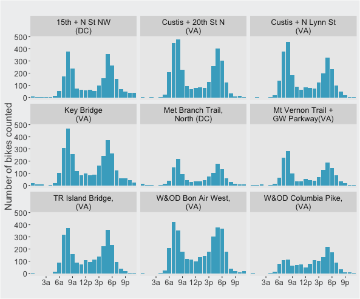

This past Friday brought sunny weather and Bike to Work Day, an annual celebration of biking throughout the DC region. But while some may forego a car, train, or bus to celebrate, Bike to Work Day is just like any other weekday for many. Biking is on the rise throughout DC and will likely become even more popular with the upcoming Metro maintenance.
How did this year’s Bike to Work Day look across some of the region’s most popular bike routes? Automatic bike counters installed by DDOT and Arlington County that collect real-time data on foot and bike traffic give an idea. The chart below compares the number of bike rides for this year’s Bike to Work Day to average weekday ridership so far in May and last year’s Bike to Work Day (BTWD).
Bike to Work Day 2016 Brings Many More Bikers
Bike counts for average May weekday to date and Bike to Work Day (BTWD) 2015 and 2016
Source: DDOT and Arlington County, via bikearlington.com
This year's Bike to Work Day was a success across the region. There were more bike rides than last year for nearly all bike count locations. After weeks of rain, a sunny day and Bike to Work Day festivities brought out many more cyclists than an average weekday this month. Most locations saw 250% more bike rides on Friday compared to the average May weekday. Virginia had the largest gains; the Custis Trail near 20th St N had four times as many bike rides. 15th St NW in DC was the only location to have fewer Bike to Work Day bike rides than last year, possibly due to construction 2 blocks south that narrowed the bike lane. It is also on of the most popular bike count locations. It had the most bikes on an average May weekday and received the smallest bump from Bike to Work Day.
As may be expected for Bike to Work Day, and most weekdays generally, the greatest number of bike rides occur during commuting hours. For most locations, the 8 a.m. to 9 a.m. is the high point of the day, with a slightly lower evening commute peak in the 5 o'clock hour.
Bike Rides Peaked During Commuting Hours
Hourly bike counts for Bike to Work Day 2016

Source: DDOT and Arlington County, via bikearlington.com
Interested in learning more about or making a DIY bike counter? Code for DC is currently building and testing out bike counters to install throughout the District!
Technical notes: Data are available at bikearlington.com and collected by DDOT and Arlington County. You can find complete code for this post on my github page.